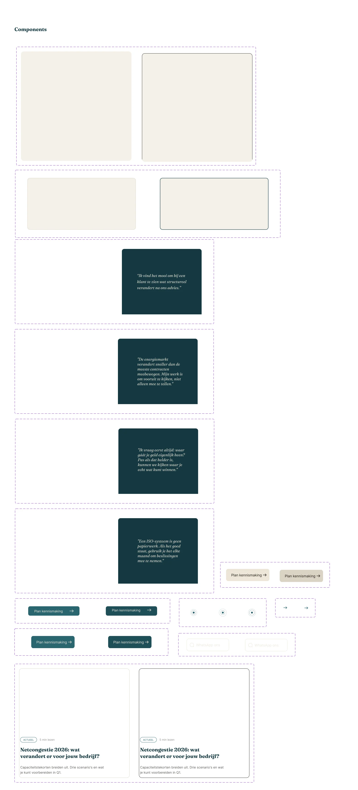
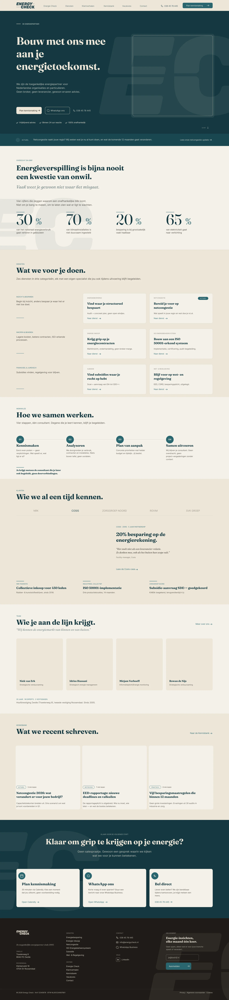

A 20-year-old energy bureau that needed to sound like its team
Energy Check is an independent Dutch energy consultancy. About ten people, two offices, twenty years in the business, advising large organisations on procurement, savings, grid congestion, ISO compliance, and policy. The take-home asked for a desktop homepage redesign with full creative freedom on color, type, and direction.
The interesting question wasn't visual. It was strategic. The current site sounds like every other player in the category. Formal, feature-listed, “u” everywhere. The team I'd been told about, and seen on LinkedIn, sounded nothing like that. The work was about closing that gap.
Talking to the team, then looking at what they actually shipped
I started with a long conversation with Ivana, my main contact. The brief was clear on tone: “professioneel met persoonlijke touch. Je/jij, geen u. Warm team, vakkundig.”
Then I looked at the live site. The contrast was stark. Formal “u”-tone throughout, dense feature lists, no team visible, hero photo of a sunset windmill. Most of the warmth Ivana described lived on LinkedIn, where team members write personal posts that never reach the website.
“Wij kennen de energiemarkt van binnen en van buiten” · “Bouw met ons mee aan de energietoekomst” · “Met Energy Check heb je overzicht en grip in jouw energiezaken”

Seven Dutch competitors. One pattern.
I mapped seven Dutch energy advisory firms, from incumbents like NIFE and SPOT to smaller players like Sustendo and Kasper. Different brands, almost identical websites: generic green imagery, formal “u”-tone, phone number hidden in the footer, “independent” claimed by everyone, feature lists in place of outcome language, no team visible, and a single CTA where multiple contact modes would serve better.
Each of these is a convention. Conventions exist because they're safe. They're also where the opportunity is. The patterns nobody breaks are the patterns nobody owns.
The patterns nobody breaks are the patterns nobody owns.
Six moves that came out of the research
1 · Show the team. Energy Check's LinkedIn is full of personal posts from team members. None of that warmth reaches the website. Putting the team in the hero is the single biggest differentiator available.
2 · Lead with outcomes, not features. Energy Check already has the numbers: 30% of national energy lost in buildings, 20% savings often achievable. All currently buried in body copy. Move to the hero, make them large.
3 · Use “je/jij” throughout. Direct from the briefing, and rarely done in the B2B category. This single decision rewrites half the copy.
4 · Surface “direct contact with the executor.” A real differentiator currently hidden on the About page. It belongs on the homepage as a sales argument.
5 · Multi-modal contact. Calendly, WhatsApp, phone. All three offered as equal options, no hierarchy. Energy Check already does this. The site just doesn't reflect it.
6 · EC wordmark as a design system, not just a logo. Treating the strong E + C wordmark as a recurring motif (section dividers, watermarks, accent shapes) builds visual identity nobody else has.
Two hero directions. Both honest about their trade-offs.
Rather than commit to one direction and pretend the alternatives didn't exist, I built two. Each with explicit strengths and weaknesses written below it. That way the conversation with the client would be about strategy, not taste.
Optie A · Team in context. A 60/40 split. Type-led headline left, photograph of consultants in a client setting right. Breaks the category convention hardest. The risk: requires real photography, not stock.
Optie B · Abstract EC-beeldmerk. Full-bleed type, the E and C of the wordmark blown up as graphic shapes. Designerly, producible without photography. The risk: less immediate “this is for me” signal for the visitor.
The recommendation is Optie A if real team photography is feasible, Optie B as a credible fallback that still differentiates the brand.

The full page, structure first
Before any high-fidelity work, I laid out every section in mid-fidelity. Not pretty, but decision-ready. The structure: hero, services, way of working, customer stories, team, knowledge base, final CTA, footer. Each section earns its place by doing a specific job in the conversion narrative.
A few decisions worth flagging. The services section groups six offerings into three outcome categories instead of listing them flat. The way-of-working section ends every step with “direct contact met de uitvoerder” as a recurring signature line. The customer stories section deliberately avoids a carousel.
The team section uses portraits that reveal a personal intro on hover, directly answering “no team visible” from the competitive scan. The final CTA is full-bleed teal with three equal contact options. The footer uses the EC wordmark as a subtle watermark.


A small design system built around one good idea
Even at mid-fidelity, I built out the system. Tokens, components, and the EC wordmark treated as a graphic motif. The idea: any future page or campaign should be buildable from these pieces, and should be unmistakably Energy Check at a glance.
The wordmark treatments (large, cropped, watermark, divider) are the part of the system I'm most happy with. They give Energy Check a distinctive visual signature that doesn't depend on photography or illustration, and they cost the production team nothing extra to use.


Strategy and system, brought together at full fidelity
The final desktop homepage. Every move from the strategy section is now visible on the page. Team in the hero, outcomes in large numbers, “je/jij” throughout, the executor-promise as a recurring signature line, multi-modal contact as three equal options, and the EC wordmark surfacing as section dividers and watermark.
The full page is long. By design. The strategy was never about a punchy hero alone, it was about earning trust progressively, section by section.

What I'd validate next
The project felt finished in terms of strategy, structure, system, and visual design. What it's missing is contact with real buyers. The current homepage assumes their priorities (overzicht, grip, multi-modal contact). Validation would either confirm that or surface something I missed.
The other thing I'd build next is the mobile design. The brief was desktop-only at 1680px, but the buyer is just as likely scrolling on a phone between meetings.
If I look back at the process, the move I'm most proud of is presenting two hero directions with their trade-offs written out, instead of one polished option. It made the conversation with the client about strategy rather than taste, and that's the kind of conversation I want to be having more of.